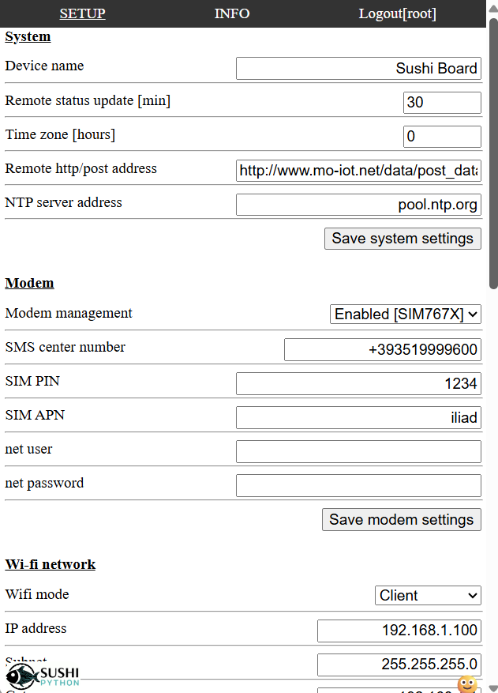
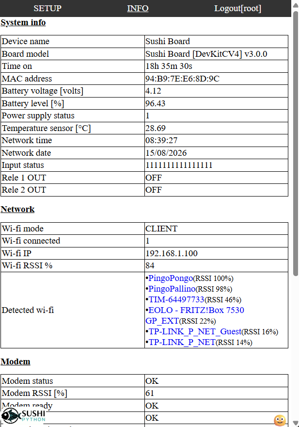
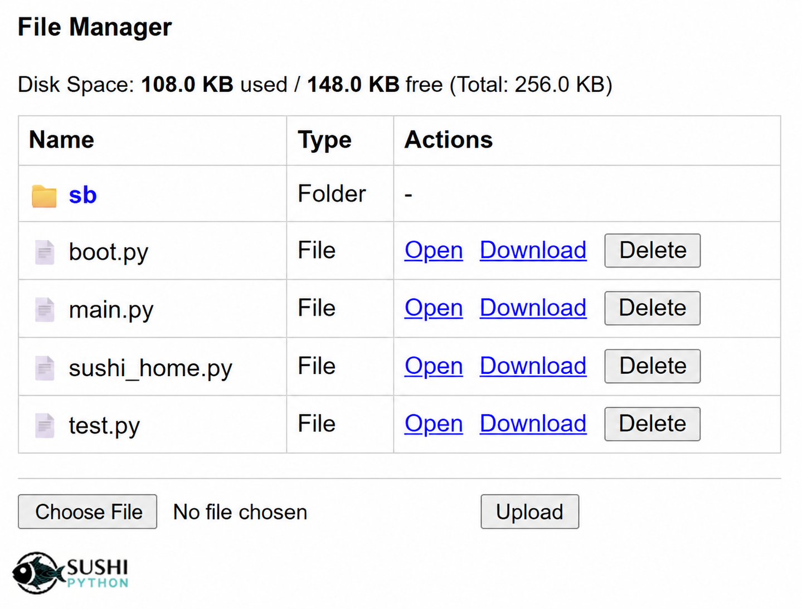
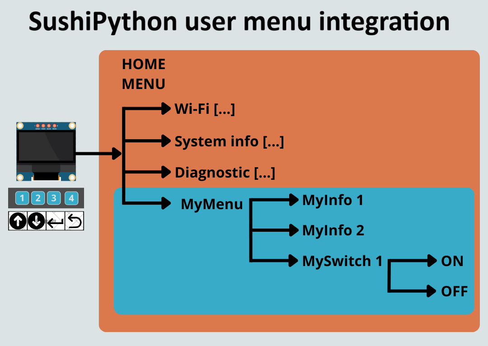
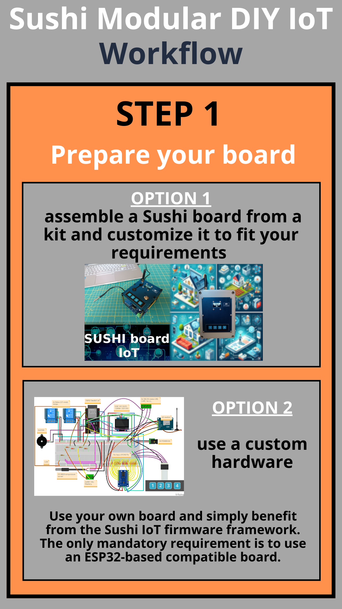
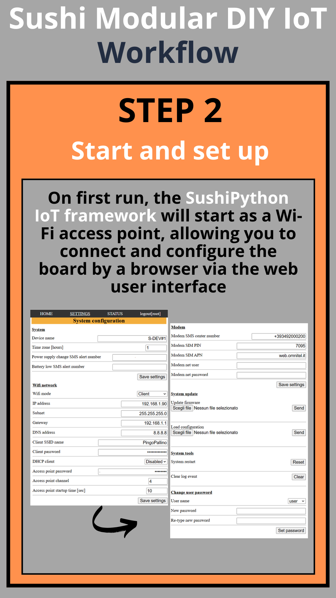
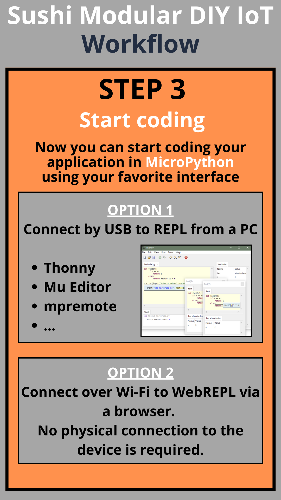
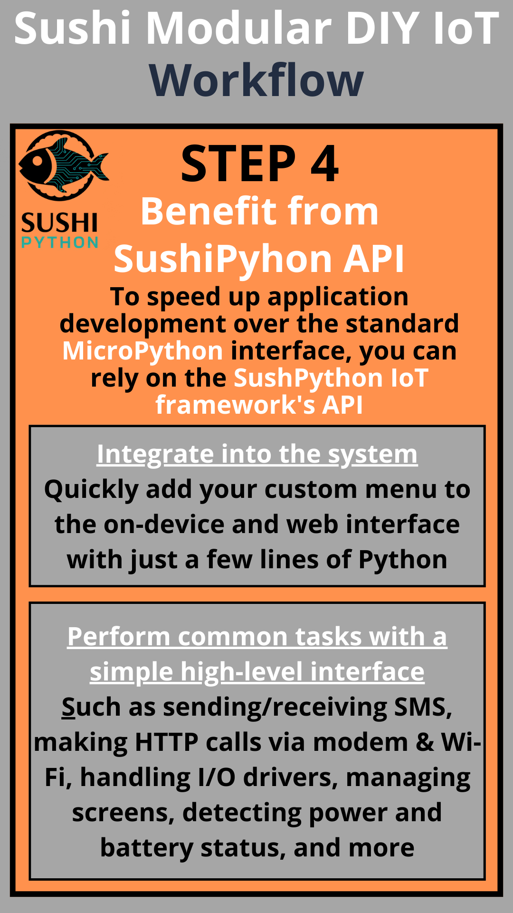

SushiPython IoT-Framework Manual
- Document version: 2026-08-16-A
- Online DOC: SushiPython project
CONTENTS
- Integrated tasks and components
- Getting started guide
- Micropython coding introduction
- SushiPython uPy interface
- Setup parameters
- Hardware compatibility and pinout
- Typical Workflow
Integrated tasks and components
SushiPython integrates some common system tasks and software components that can be useful to speed up development.
| Task name | Description | Requirements |
|---|---|---|
| Wi-Fi | Wi-Fi network connection management | ESP32 SoC only |
| HTTP server | HTTP server ready for custom calls | ESP32 SoC only |
| Web interface | Web user interface accessible by a browser with user authentication and grants | ESP32 SoC only |
| Setup | System setup via configuration file | ESP32 SoC only |
| Log & Events | System log and event register management | ESP32 SoC only |
| System health and monitor | Monitor system status. Log traces, store to file, and send device status remotely. Manage status LEDs and temperature sensors |
- (OPTIONAL) External LEDs - (OPTIONAL) Voltage divider for ADC inputs to read battery level and power status - (OPTIONAL) Wired or onboard temperature sensors |
| On-device interface | On-device user interface with screen and keypad | - 4-button keypad - OLED screen |
| Modem | Modem management to enable high-level functions like sending/receiving SMS, performing HTTP GET/POST | Modem module |
| Data manager | Manage and send data remotely via HTTP POST, switching automatically between Wi-Fi and modem | - (OPTIONAL) Modem |
Wi-fi management
The wi-fi management let setup the device to work in 2 ways:
- Act as wi-fi access point
- Connect to am existing wi-fi network
The setup can be done by the web-interface.
Default network settings
- Wi-fi mode: Access point
- Network SSID: "Sushi-..."
- Network password: ""
- IP address: 192.168.1.100
Extra functions
-
It is always possible to force the Wi-Fi to run in access point mode by holding the designated button for about 15 seconds: after that time the Wi-Fi will switch to access point mode. So hold the button pressed and after 15-20 seconds scan the local Wi-Fi networks: you should detect the "SushiPython-IoT" network. Note that this does not permanently reset the device to factory settings: it only forces Wi-Fi to start in AP mode with default network settings (IP address
192.168.1.100and no password).
At the next micro reboot (reset button pressed or power off), Wi-Fi will start again according to the saved configuration.
The specific button depends on the CPU board:- ESP32DevKitC board: use the onboard "BOOT" button (looking at the ESP32 board with USB connector in the bottom, it is the button on the right).
-
The system parameter powersave_time_wifi_off_min defines the timeout (in minutes).
If the device cannot connect to the configured Wi-Fi network (or, in AP mode, no client is connected) for longer than this time, the wireless hardware is switched off to save energy.
Reconnection can then be done either by restarting the device or using the on-device interface.
HTTP server
The HTTP server manage http get/post calls with authentication. It's possibile create custom http endpoints by MicroPython interface. See SushiPython uPy WEBSERVER interface.
Web interface
The user web interface is divided into the following sections:
- SETTINGS: contains all system settings, maintenance tools and firmware update interface.
- System, Modem, Wi-fi configuration user interface
- Firmware update
- Password management
- Store and load full configuration by JSON file
- System tools
- File manager: let manage MicroPython scripts and all files by the web-interface without connect to REPL
- Get full configuration in JSON format
- STATUS: displays system information
- System info
- Versions
- Network status and detected Wi-fi
- Modem status
- Show runtime system LOG
- Show event LOG (stored to flash)
- Get full status in JSON format
Access is protected by user levels with 3 profiles. HTTPS is supported (default is HTTP).
Default users
| User name | Grants | Default password |
|---|---|---|
| user | Read-only access | "1234" |
| admin | Read-write access with some limitations | "2801" |
| root | Full read-write access including system updates | "1976" |
Some print screen
| Setup | Status |
|---|---|
 |
 |
| File manager | |
|---|---|
 |
System setup
The SushiPython IoT Framework can be configured either through the web interface or via the MicroPython REPL interface.
Basic settings are available as user controls directly in the web interface, while all settings (both basic and advanced) can be managed through a configuration file.
This configuration file can be saved or loaded from the web UI using the controls at the bottom of the Settings section, and it can also be accessed from the MicroPython file system and API.
Factory restore
- If you lose Wi-Fi connection and just need to access the web UI, you can force AP mode by pressing the dedicated onboard button (see Wi-Fi extra functions).
- A full factory restore can be performed by sending a command from the MicroPython REPL, see SushiPython uPy interface.
Firmware update
Firmware update can be performed in 2 ways:
- By web interface: in the SETUP section, use "Fimware update" controls to select an send the new firmware. IMPORTANT: to update the firmware in this way you must use the "ota" version of the firmware ".bin" file.
- By USB : see the getting started guide how flash the firmware by USB connection.
Log and Events
System log and events can be useful to monitor & debug the system working. Both can be accessed by the web-interface in the status page. Log can be enabled even from the MicroPython REPL interface. Logs are cleared at every system restart while events are stored into a file. The max events file size is defined by the configuration parameter event_register_size_kb.
System health and monitor
System health is a component useful to monitor the device status in different ways:
- Read the battery level and main power supply status. Require to connect battery and power to 2 ADC input with proper external resistor divider. For pinout details see Sushi-board or your board hardware pinout. Configuration parameter: battery_enable
- Trace to log the system status (configuration parameter system_info_log_frequency_min).
- Store to file the system status (configuration parameters system_info_store_frequency_min and system_info_csv_filter).
-
Send remotely the device status by http POST. Useful for example to monitor remotely an IoT device. This function requires setting the parameters system_info_send_http_post_frequency_min (frequency) and http_post_delivery_address (destination). If this function is enabled, the system status (that can include even MicroPython application specific modules) is sent remotely in JSON format, with an http POST like:
http://http_post_delivery_address>?CONTENT=SYSTEM_STATUS&MAC=DEVICE_MAC_ADD&DT=date_time&TS=system_ticks
Example: "http://www.your_site.net/post_data.php?CONTENT=SYSTEM_STATUS&MAC=94B97EE68D9C&DT=14-08-2026@16-33-58&TS=9002301"
Payload: full status in JSON format
-
Manage status LEDs. Let monitor the status by LEDs connected to the device.
- System status: function enabled by system_status_led parameter. 1 slow blink indicates OK, otherwise it's an error state.
- Wi-Fi status: function enabled by wifi_status_led parameter. 1 slow blink indicates client connected; quick continuous blink indicates access point mode; otherwise it's an error state.
- Manage one or more temperature sensors that can be read in different ways: in the system status, in the user menus, or via SushiPython uPy interface.
Configuration parameter: ext_temperature_sensor_enable.
On-device interface
This component manages a system menu accessible by a screen and a keypad directly on the device.
Basically the following submenus are present:
- Diagnostic: several diagnostic info about the device, like battery level, temperature, etc.
- System info: versions and date-time info.
- Wi-Fi: Wi-Fi connection status, IP, option to force Wi-Fi off or in access point mode.
- Modem: modem status and network info.
Configuration parameters: keyboard_enable, lcd_enable, ioex_enable.
The standard menu management uses a 4 buttons keyboard (keyboard_enable = 4) to navigate: NEXT, PREVIOUS, BACK, ENTER.
The menu can be extended with application specific submenus by SushiPython uPy interface.

Modem management
Modem management component:
- Perform the background tasks to manage the modem by AT commands, including SIM management (PIN, SMS center, APN, etc.). This includes a quite reliable monitor of the modem status, performing all the actions to keep the modem always available and working properly. To achieve maximum reliability, it is recommended to also connect the MOS-controlled modem power control.
- Enable the SushiPython API to easily perform high-level functions like send/receive SMS, perform HTTP GET/POST, and trigger actions when calls from certain numbers are received. See SushiPython uPy interface.
Anyone who worked on low-level modem management knows how tricky it can be to perform all the required tasks reliably. This component makes common operations quite easy.
Data manager
In an IoT application it is common to have data to be get/send remotely from/to some server (e.g., sensor data or alarms). This component manages these tasks:
- Send data by HTTP POST
- Get data by HTTP GET
- Sens SMS messages
- Put the data into a queue to manage multiple requests simultaneously.
- Manage different retries in case of errors.
- Switch automatically on available channels: try Wi-Fi then try use the modem.
- Fire an asynchronous callback to give feedback when the process ends.
SushiPython API provides an interface to this component, simplifying the process with minimal effort.
Getting started to SushiPython
1. Get the firmware
In SushiPython download page there is a table with all the releases for the supported boards. To get the latest features and fixes, it's recommended to use the latest stable version available.
The are always 2 versions:
- sushipython-vXX.XX.XX.X-ota.bin : file to be used to update from web interface, best choice and possible if a previous version of SushiPython is already installed.
- sushipython-vXX.XX.XX.X-flash.bin : file to be flash by USB connector.
2. Flash the firmware
If a previous version of SushiPython is already installed on the board you can upgrade the firmware by the web-interface (ota version).
At 1st load or if wifi is not enabled, the next instructions explain how flash the firmware by USB connector.
Flashing the firmware can vary depending on the specific board you are using (in that case please check the producer documentation for more details).
We document here 2 options to flash the firmware that can fit on ESP32DevKitC-V4 and most ESP32 boards.
2.1. Flash by ONLINE tool
Espressif provides an online tool that, using modern browser functions, can connect to your board via USB/COM port.
The online tool is probably the easiest way to flash the firmware, but it's a "young" feature and depending on your system/browser/chip version may not work.
If you have troubles, do not waste too much time on it; switch to the OFFLINE procedure, which is more reliable across all conditions.
Steps
- Plug your ESP32 board via USB into your PC.
- Open the ESP Flash Tool in the browser.
- Select 115200 as baud rate. Higher baud rates can cause issues; if you experience problems like "Error: No serial data received", switch to 115200.
- Click "Connect" in the "Program" section and select the ESP32 board COM port. In the console, you should see the chip model and other info if the device is properly connected.
- Start the board in boot mode (only if the program interface does not appear automatically).
On the board: press the boot button, hold it, then press and release the reset button. If the step is successful, the web interface should display "Connected to device:" with all the buttons to program the board.
- Press "Erase Flash" (recommended, especially for the first firmware load).
- Select the firmware file (use the button on the right, not "Add"), set the Flash address to "0", and press "Program".
Troubleshooting
- If "Error: No serial data received" appears, use the lowest baud rate (115200).
- If you see "flash corruption" in REPL after firmware download, reinstall the firmware using "Erase Flash".
- If the chip is detected but Erase/Program fails, it is probably not in BOOT mode. Boot mode is automatic if the chip is blank/new; otherwise, follow step 5 carefully to reset the device into boot mode.
Tip: For every retry, refresh the tool page to start clean, and possibly unplug/replug the device.
2.2. Flash by OFFLINE tool
Download the official Espressif tool for your system: ESPTOOL.
For example, here you can get the .exe version of the tool.
This is an easier alternative compared to the Python ".py" version of the tool, which you can find here.
If you use "esptool.py" replace "esptool" with "esptool.py" in all the following commands.
Erase the chip
This is required especially when you are flashing the firmware for the first time.
esptool erase_flash
Flash the firmware file
esptool write_flash 0x0 FIRMWARE.bin
Where "FIRMWARE" is the firmware .bin file that you downloaded. See SushiPython firmware download.
Troubleshooting
- esptool fails to detect the correct COM port: specify it with the "--port" option in front of the command.
esptool --port PORTNAME ...
Where PORTNAME:
- On Linux, usually something like /dev/ttyUSB.
- On Mac, usually something like /dev/cu.usbmodem01.
- On Windows, usually something like COM5.
If these steps don't work, consult the esptool documentation from Espressif:
2.3. Test the firmware
After successfully loading the firmware, you can quickly check that everything is working by connecting to the MicroPython REPL.
You have two options:
- Serial tool: connect with any serial terminal to the USB port.
See the coding section of the manual for details. - Web tool: use the online COM monitor provided by Espressif on the same page as the ESP Flash Tool.
Steps for the web tool:
- If you previously used it to flash the firmware, refresh the page.
- In the Console section, set the baud rate to 115200, click Start, and select the COM port of your board.
- On the device, press the RESET button.
If everything works, you should see the device boot and the MicroPython REPL:
...
MicroPython 495ce91-dirty on ... SushiPython firmware framework on ... with ESP32
Type "help()" for more information.
>>>
3. Setup and Wi-Fi connection
This step is optional if you plan to start coding the device through the USB REPL interface.
When the firmware is freshly flashed, the board starts Wi-Fi in access point mode.
By scanning available networks, you should see an SSID like "Sushi-..." (the suffix is the device MAC address).
You can connect your PC or smartphone to this Wi-Fi network and open the web interface at:
http://192.168.1.100
⚠️ Use http://, not https:// — HTTPS is supported but not enabled by default.
Default network settings:
- SSID: "Sushi-..."
- Password: (empty)
- IP address: "192.168.1.100"
- User: "root"
- Password: "1976"
From the web interface, you can adjust the base system settings and OPTIONALLY configure the device to connect to your Wi-Fi network.
For more details about SushiPython web interface, see the system setup section.
4. Start coding
Once the device is configured, you can start coding with your preferred MicroPython interface.
In this guide, the examples use Thonny, but several alternatives are available.
For more details, see the coding section.
Micropython introduction
SushiPython integrates the MicroPython interpreter, giving you full access to the built-in firmware modules and the extensive set of libraries available online. Here we focus on the most important base concepts.
If you are new to MicroPython development, the advice is follow these steps:
- Connect your board with USB cable
- Choose a user interface for MicroPython scripting
- Browse the examples section where you can start play with some scripts ready to test and modify.
Resources:
Connect to the board
The first step to start coding is to connect to the MicroPython REPL interface.
There are basically two alternatives to program your scripts on the board:
- Connect with USB cable directly to the micro board using the USB/UART REPL interface.
This is the most common, quick, and reliable solution to program your board. If you have a PC and no problems connecting by cable to the board, this is the best way.
Choose a user interface
This section is for those who have no experience with MicroPython
Once the board is connected to your PC, you can choose among several user interfaces to develop your scripts. The REPL interface is an interpreter that executes MicroPython commands, allowing you to interact directly with the device. Through REPL, you can also access commands to read and write files on the device’s internal memory, which is managed by a file system available in MicroPython.
Although REPL can be used from any serial terminal that opens the COM port, working at such a low level quickly becomes impractical for development beyond simple tests.
For this reason, utilities are available that provide a higher-level interface, making it easier to perform tasks such as:
- Save Python files to the device memory (usually
.pyfiles), including:- Your application script files
- New classes or MicroPython components to add functionality to the device
- Open and edit files directly on the device
- Run the
.pyscripts in the device - Perform other actions, like restarting the device to test startup behavior after adding auto-run scripts
Some common interfaces for MicroPython development include:
- Arduino Lab for MicroPython – Arduino solution for MicroPython development
- Thonny – Simple interface, easy to use even for beginners
- mpremote – Command-line tool developed for MicroPython. Great for advanced users who prefer working with their own editor and sending commands from the prompt (Windows) or bash (Linux). Also useful for running scripts directly on the device.
The choice of interface is up to you. In our examples and tests, we often relied on Thonny.
Auto run a script
After you develop a script that performs some function, it is typical to want it to run automatically when the device starts.
It is important to know that MicroPython automatically runs two scripts at every boot:
- boot.py: typically contains system and hardware initialization commands.
- main.py: this is the main script executed to run your application. Here is where you put your code or run other ".py" scripts you created.
These two scripts can be placed, like any other ".py" file, into the file system using your favourite MicroPython UI interface.
SushiPython uPy interface
SushiPython extends the base MicroPython interface with additional modules that allow you to quickly perform specific tasks.
Beyond the system tasks integrated into the framework these MicroPython modules offer another advantage: they speed up development by reducing the complexity of common operations to a minimum.
For example, with just a few lines of code you can:
- send or receive an SMS to remotely control a device, such as switching a light on or off
- send and receive http calls
- integrate a local user interface menu to manage settings directly on the device
The MicroPython modules embedded in SushiPython fall into two categories:
- SushiPython core module - the core of the SushiPython MicroPython interface, developed in C and providing all the framework’s native extensions.
- Extension modules - classic “.py” modules embedded in the firmware (as frozen modules). They rely on MicroPython interface in the background to perform the most common operations in the simplest way possible.
MODULE TYPES
SushiPython uPy interface is composed by a core module (C code that is part of the firmware) and some frozen modules (MicroPython .py files embedded into the firmware).
CORE MODULE
sushiis the core module.- All calls to the core module like
sushi.cmd("command",...)returns aSUSHI_CMD_REPLY.
FROZEN MODULES
- Integrated "frozen"
.pymodules are:sushi_menu: User menu managementsushi_utils: System setup, status & utilities
If necessary frozen modules can be wrapped putting the modified files into the file system by the REPL interface. Frozen modules source code is here.
GENERAL
SUSHI_CMD_REPLY
SUSHI_CMD_REPLY is the common reply to any sushi.cmd("command",...):
tuple(err:int, result:var)
err: command error (0 = no error ; <> 0 = error code)result: variable value and type:- if
err= 0 (no error) =>resultcontains the command specific reply - if
err!= 0 (error) =>resultcontains the error message (str)
- if
SYSTEM
sushi.help() -> help:printed_text
sushi.cmd("help") -> help:printed_text
Show help info.
sushi.cmd("ver") -> ver:str
Return the firmware version.
sushi.cmd("restart" [, delay_ms:int])
Restart the board after the optional delay in milliseconds.
delay_ms(optional, default 2000) : delay in ms before restart
sushi.cmd("set_log", level:int)
Enable or disable REPL logging
level: log level (0=disable,1=enable,254=extended-modem-com,255=extended-all)
sushi.cmd("factory_reset")
Restore factory default settings
sushi.cmd("log", args:tuple(type:str , msg:str))
Add an entry to the LOG
type: type of message ('E'=error,'S'=status,'D'=debug,'X'=event)msg: log message
Example: sushi.cmd("log", ('S' , "Hello !"))
sushi.cmd("register", code:str)
Register Sushipython on this device.
code: unique 64-character code.
sushi.cmd("wd_init", timeout_sec:int)
Enable Micropython script watch-dog
timeout_sec: Watch dog timeout in seconds. If 0 the WD is disabled.
sushi.cmd("wd_refresh")
Micropython script watch-dog refresh. To avoid restart, must be called every a time less than the timeout defined with sushi.cmd("wd_init", timeout_sec:int)
SETUP and STATUS
sushi_utils.get_sushi_config() -> config:dict
Return full configuration structure
sushi_utils.set_sushi_config(settings:dict ) -> result:int
Set configuration parameters (self restart if settings changed).
settings: dict structure with the settingsresult(return): 0 = value not changed ; 1 = value changed no restart ; 2 = value changed need restart; < 0 = error.
sushi_utils.get_sushi_status() -> status:dict
Return full status structure
sushi_utils.load_setting(module:str, setting:str) -> value:int, str, dict
Load a custom configuration parameter
sushi_utils.save_setting(module:str, setting:str, value:int, str, dict) -> result:int
Save a custom configuration parameter
setting: setting namevalue: setting valueresult(return): 0 = value not changed ; 1 = value changed ; < 0 = error
sushi_utils.register_upy_module(module_name:str , config_file:str , status_get_callback:func) -> result:int (0 = error ; > 0 = id)
Register a MicroPython module to the web interface. This let integrate in the web-interface an application specific configuration and status in JSON format. In this way it's possible configure the appplication specific settings by web-interface and monitor the status both with web-application or remotely if System health and monitor function is enabled.
module_name: the module name-
config_file: .json configuration file name. This where the configuration is get and stored. -
status_get_callback(module_id:int) -> json:strmodule_id: the unique id returned by "register_upy_module" call. Can be ignored if the callback is not shared between different upy modules.json(return): JSON format string with the module status
WIFI COMMANDS
sushi.cmd("wifi_stop")
Stop wifi
sushi.cmd("wifi_restart")
Restart wifi
Wi-fi Configuration: see SETUP and STATUS section.
HTTP
sushi.cmd("set_http_hnd", callback:func)
Set a callback to receive http calls result.
callback(args:tuple(call_id:int, http_result_code:int, reply_data:str))call_id: the unique id returned by "http_get"/"http_post" callshttp_result_code: if > 0 are server/modem reply ; if <= 0 are internal errorreply_data: data reply from remote server
sushi.cmd("http_get", args:tuple(url:str [, timeout_ms:int , http_opts:str])) -> unique_id:int
Start http GET call.
url: remote server URLtimeout_ms(optional, default 10000) : call timeout in mshttp_opts(optional) : http calls options in key-value format (see below)unique_id(return): call unique ID (useful in callback to identify the reply)
Example: sushi.cmd('http_get',('http://your-site.com' , 2500))
sushi.cmd("http_post", args:tuple(url:str , data:str [, data_type:str , timeout_ms:int , http_opts:str])) -> unique_id:int (call ID)
Start http POST call
url: remote server URLdata: data to be sentdata_type(optional, default: "application/json"): data type.timeout_ms(optional, default 10000) : call timeout in mshttp_opts(optional) : http calls options in key-value format (see below)unique_id(return): call unique ID (useful in callback to identify the reply)
Example: sushi.cmd('http_post',('http://your-site/post_data.php' , 'hello world !' , 'text/plain' , 2500))
http_opts
Single or multiple options in key-value format (';' is the separator between different options):
cm_http_wifi_num_max_retry: num. max try on WIFI channel (0 = channel not used , 1..10 , default=3)cm_http_modem_num_max_retry: num. max try on MODEM channel (0 = channel not used , 1..10 , default=3)
WEB SERVER
sushi.cmd("set_webserver_hnd", callback:func)
Set a callback to handle webserver custom http calls.
callback(args:tuple(call_type:str , url_path:str , user_name:str , user_grants:str , rx_data_type:str , rx_data:str)) -> tuple(http_result_code:int [, reply_data:str , reply_data_type:str])call_type: "GET" , "POST"url_path: e.g. "/mycall"user_name: The user logged in webserveruser_grants: The grants associated with the logged user ('R'=read , 'W'=Write , '*'=root)rx_data_type: e.g. "text/plain" (call_type "POST" only)rx_data: received data (call_type "POST" only)http_result_code(return) : http reply code (200 for OK, or any valid http code).reply_data(return, optional) : data to be sent as reply.reply_data_type(return,optional, default "text/plain") : e.g. "text/plain".
Note: to ignore a call just do not return any value (or a None value)
MODEM
sushi.cmd("set_modem_hnd", callback:func)
Set a callback to handle modem events.
callback(args:tuple(event_type:int , details:var))event_type: 0=SMS received, 1=Incoming call, 2=SMS TX result
ifevent_type= 0 -> details:(call_number:str, sms_text:str, time:str)
ifevent_type= 1 -> details:(call_number:str)
ifevent_type= 2 -> details:(sms_id:int, tx_result:int (1=OK, 0=ERROR))
sushi.cmd("send_sms", (text:str-utf8 , number:str)) -> sms_id:int
Send an SMS message. Returns the SMS ID if command accepted. Max text LEN: 70 characters.
sushi.cmd("send_modem_cmd", args:tuple(cmd:str , add_cr:int , answer_type:int , reply_start_pattern:str , reply_start_timeout_ms:int , reply_end_timeout_ms:int)) -> modem_reply:str
Send AT command to the modem. Help function in case it's necessary send custom AT command to the modem. This command synchronize with the internal modem tasks that even communicate with modem by the UART.
cmd: AT command to be sent (e.g. "AT")add_cr: add or not 0x0D (CR) char at the end (0 ; 1).answer_type: type of expected answer. 0 = ignore the answer ; 1 = wait "OK" text ; 2 = wait custom data (following fileds)reply_start_pattern: reply start pattern (only for answer_type = 2). If empty string 1st received byte will start the answer timer. This feature is because certain AT command reply immediately with "OK" then after an elaboration time returns wirh the command specific answer data.reply_start_timeout_ms: timeout ms waiting for reply_start_patternreply_end_timeout_ms: byte timeout afterreply_start_patternis receivedmodem_reply(return) : modem replay data
Example
Send a command waiting for the answer
sushi.cmd('send_modem_cmd' , ('AT+CGPADDR=1' , 1 , 2 , "" , 1000 , 100))
POWER
sushi.cmd("read_power_state") -> power_state:int(1=ON, 0=OFF)
Get the main power state
sushi.cmd("read_power_voltage") -> voltage:float (Volts)
Read the main power voltage
sushi.cmd("read_batt_level") -> level:float (percentage)
Get the battery level in percent
sushi.cmd("read_batt_voltage") -> voltage:float (Volts)
Read the battery voltage
MENU
Submenu class in sushi_menu module
Submenu(menu_title:str)
Create a new "Submenu" item
Submenu items methods:
add editable list
add_enum_editable_item(name:str, onchange:func , value_index:int , *values:str) -> entry_id:int
Add an entry with a selectable list of values
name: entry name shown in the menuonchange(cb_entry_id:int , cb_value_index:int): callback called when value changes.
cb_entry_id:id received byadd_enum_editable_itemcb_value_index:actual value index (e.g. 0 = "OFF", 1 = "ON", ... )value_index: initial value index (0,1,2,...)values: list of values (e.g. "OFF","ON",...)entry_id(return) : new menu entry ID
add editable float number
add_float_editable_item(name:str , onchange:func , value:float , min:float , max:float , step:float) -> entry_id:int
Add an editable float number entry
name: entry name shown in the menuonchange(cb_entry_id:int , cb_new_value:float): callback called when value changes.
cb_entry_id:id received byadd_enum_editable_itemcb_new_value: new valuevalue: initial valuemin: min range valuemax: max range valuestep: value step in menuentry_id(return) : new menu entry ID
add read-only string
add_read_only_item(name:str, onprint:func) -> entry_id:int
Add a read-only entry (like a version or info not editable from UI menu)
name: entry name shown in the menuonprint(cb_entry_id:int) -> text:str: callback called to print the value.
cb_entry_id:id received byadd_enum_editable_itemtext(return): text to be shown in the menu
set value from uPy
set_menu_item_value(menu_item_id:int , value:var)
Set the value of a menu entry value
menu_item_id: menu entry idvalue: new value, the data type depend on the menu item type.
- if menu item is an editable list ->
value:int= value index- if menu item is an editable float ->
value:float= new value
GPIO & SENSORS
sushi.cmd("read_temperature", sensor:int) -> temperature:float (°C)
Read temperature from the selected sensor
sensor: temperature sensor 0=DS18B20-1,1=DS18B20-2
sushi.cmd("read_ext_gpin", source:int) -> status:int (0;1)
Read external digital input from the specified source.
source: external input source (0=IO-Expander-1)
sushi.cmd("set_ext_gpin_int", callback:func)
Set a callback to detect changes in external input state
callback(source:int (0 = IO-Expander-1)): callback function to detect input status change.
sushi.cmd("set_out_state", args:tuple(name:str , state:int)
Set digital out state by name. Normally MicroPython "machine.Pin()" library is used. This function purpose is mainly to let control some system defined output even without the need to know the pin where are connected (like RELAY, BUZZER, etc.).
-
name: set output state using his logic name(e.g. "RELAY_1..N" , "BUZZER"...). It's possible define output logic names byadd_outcommand. System defined names are:- "BUZZER" : enable/disable buzzer
- "RELAY_1" , "RELAY_2", ... : relay status
- "STATUS_LED" : system status LED
- "EXT_LED_1", "EXT_LED_2",... : system extra status led
-
state: logic state to apply to the OUTPUT (0;1)
sushi.cmd("add_out", (name:str , pin:int))
Set a pin as GPIO with a logic a name.
Examples
Quick code examples
Sending SMS
# Configure callback to handle SMS sending result
def sms_callback(args):
event_type = args[0]
if event_type == 2: # SMS TX result
sms_id = args[1]
result = args[2]
print(f"SMS {sms_id} result: {result}")
sushi.cmd("set_modem_hnd", sms_callback) #return a sms_id
# Send an outbound SMS
res , sms_id = sushi.cmd("send_sms", ("Alarm: High temperature detected!", "+39XXXXXXXXXX"))
print(f"SMS id: {sms_id}")
Receiving SMS
import sushi
# Configure callback to handle SMS reception
def sms_callback(args):
event_type = args[0]
if event_type == 0: # SMS Received event
sender = args[1]
text = args[2]
timestamp = args[3]
print(f"Received SMS from {sender}: {text}")
sushi.cmd("set_modem_hnd", sms_callback)
HTTP POST
import sushi
# Configure callback to handle asynchronous HTTP call responses
def http_callback(args):
call_id, status_code, data = args #tuple split
print(f"Request {call_id} completed. Status: {status_code}, Data: {data}")
sushi.cmd("set_http_hnd", http_callback)
# Execute GET and POST requests in a single line of code
sushi.cmd("http_post", ("http://api.example.com/telemetry", '{"temp": 23.5}', "application/json"))
HTTP endpoints
import sushi
def webserver_callback(args):
call_type, url_path, user, grants, rx_type, rx_data = args
if url_path == "/api/status" and call_type == "GET":
# Returns a tuple: (http_result_code, reply_data, reply_data_type)
return (200, '{"status": "OK"}', "application/json")
sushi.cmd("set_webserver_hnd", webserver_callback)
Menu integration
import sushi
from sushi_menu import Submenu
# Callback triggered when changing state from the physical device menu
def on_relay_toggle(entry_id, value_index):
# value_index: 0 = OFF, 1 = ON
sushi.cmd("set_out_state", ("RELAY_1", value_index))
# Create an interactive menu structure in a few lines
settings_menu = Submenu("Settings")
settings_menu.add_enum_editable_item("Relay Status", on_relay_toggle, 0, "OFF", "ON")
Projects & examples
See here all SushiPython MicroPython examples
Frozen modules
Frozen modules can be wrapped or extended by the MicroPython interface.
See here all actual modules source code
Setup parameters
'system' module
System setting are stored into "sb/SYSTEM.json", and can be set in 3 ways:
- editing the system setting file "sb/SYSTEM.json".
- by web page (if board is connected to wifi) sending a JSON file or by the user interface.
- with micropython call
sushi_utils.set_sushi_config(...)that sets certain setting to "sb/SYSTEM.json"
DEVICE CONFIG
device_name(str): Device name/description
Values: Stringdata_file_version(str): Configuration file version
Values: String
DATETIME
time_zone_hours(int): Time zone offset from UTC
Values: -12…+14time_auto_daylight_save_change(int): Enable automatic daylight saving change (European rules)
Values: 0=disabled;1=enabledntp_server_address(str): NTP server address
Values: String. Example: 'pool.ntp.org'
HARDWARE-SETUP
board_model(int): Board model. Call 'sushi_utils.pinout()' to see the pinout.
Values: 0=ESP32-DevKitC on Sushi Boardioex_enable(int): Enable I/O expander management
Values: 0=none;1=PCF8575ext_temperature_sensor_enable(int): Enable temperature sensor
Values: 0=none;1=DS18B20rele_out_enable(int): Enable relay outputs
Values: 0=none;1..2=number of relayskeyboard_enable(int): Enable keypad management
Values: 0=none;1...N=N keys on I/O-Expander;100=4 keys on GPINlcd_enable(int): Enable display
Values: 0=none;1=OLED_SSD1306buzzer_enable(int): Enable buzzer
Values: 0=none;1=buzzer enabledbattery_enable(int): Battery level range
Values: 0=none;1=reserved;2=1 li-ion cell (1S) ~3.0–4.2V;3=3 li-ion cells (3S) ~9–12.6V
SYSTEM-HEALTH&MONITOR
event_register_size_kb(int): Event register file size
Values: 0=no event file;N=Max KBsystem_info_log_frequency_min(int): System info log frequency (minutes)
Values: 0=never;N=minutessystem_info_store_frequency_min(int): System info storage frequency (minutes). Requires system_info_csv_filter.
Values: 0=never;N=minutessystem_info_csv_filter(str): Filter for system status entries stored when system_info_store_frequency_min ≠ 0
Values: String: '...' system_info_send_http_post_frequency_min(int): HTTP POST system info frequency (minutes). Posts are sent to http_post_delivery_address.
Values: 0=never;N=minuteswifi_test_ping_addr(str): IP address to test wifi connection
Values: IP address. If empty gateway address is used.
HTTP-DATA-MANAGER
http_post_delivery_address(str): Server address for system status HTTP POST.
Values: String. Example: 'http://your_web_server/post_data.php'
STATUS LEDS
wifi_status_led(str): Assign wi-fi status to an external LED
Values: String: 'GPIO_1..N', 'GPO_1..N' - see HW pinoutsystem_status_led(str): Assign system status to an external LED
Values: String: 'GPIO_1..N', 'GPO_1..N' - see HW pinoutmodem_status_led(str): Assign modem status to an external LED
Values: String: 'GPIO_1..N', 'GPO1..N' - see HW pinout
MODEM
modem_enable(int): Enable modem management
Values: 0=none;1=SIMCOM7672Xmodem_sim_sms_center(str): SIM SMS center number
Values: String. Example: '+393519999600'modem_sim_pin(str): SIM PIN code
Values: String. Example: '1234'modem_apn(str): SIM APN name
Values: String. Example: 'iliad'modem_user(str): APN user
Values: String. Optionalmodem_passwd(str): APN password
Values: String. Optional
DEBUG-EXPERIMENTAL-RESERVED
powersave_time_wifi_off_min(int): Auto wi-fi power-off after inactivity (minutes)
Values: 0=disabled;N=minutesdebug_mode(int): Debug
Values: Reservedextension_modules(str): Enable extra experimental modules
Values: Reserved
'wifi' module
Wifi settings are stored in a separated partition and can be set in 2 ways:
- By the web user interface. Note that it's always possible force the board to start as access point see wifi module for details.
- With micropython call
sushi_utils.set_sushi_config(...).
COMMON
wifi_mode(int): Wifi mode
Values: 0=Disabled;1=Client;2=Access pointip(str): IP address
Values: IP address stringsubnet(str): Subnet mask
Values: IP address stringgateway(str): Gateway
Values: IP address string
WIFI-CLIENT-MODE
cli_ssid(str): Network SSID
Values: Stringcli_passwd(str): Network password
Values: Stringcli_dhcp_enable(int): Enable DHCP client
Values: 0=disabled;1=enabledcli_dns_address(str):
Values: IP address string
WIFI-ACCESS-POINT-MODE
ap_passwd(str): Access point password
Values: Stringap_channel(int): Access point channel
Values: String
Hardware compatibility and pinout
Some of the tasks integrated into the SushiPython IoT Framework manage external hardware, so it's important to know which pins of the microcontroller are used to connect the external devices.
The base platform is always an ESP32 SoC, but the exact pin mapping used to control external peripherals depends on the specific board you're using.
The following boards are supported:
- Standalone ESP32-DevKitC board: ESP32-DevKitC is an official dev board from Espressif (the ESP32 producer). ESP32-DevKitC official Espressif doc.
- Sushi-IoT Board: is a complete IoT board developed step by step with SushiPython, it uses a ESP32-DevKitC board as add-on with all the external peripherals already connected. For all details see the Sushi-IoT Board overview.
Pinout on ESP32-DevKitC
The following list are the pins used by SushiPython when running on ESP32-DevKitC board.
All pin in list are in format 'Function name': 'Board pin name'
Board pin names (like "GPIOXX") can be resolved on ESP32-DevKitC official Espressif doc.
system(always present)
- ON-BOARD-BUTTON: GPIO0
- I2C_SDA_PIN:GPIO21
- I2C_SCL_PIN:GPIO22
- REPL_UART1_TX:GPIO1(TX)
- REPL_UART1_RX:GPIO3(RX)
- VIN-ADC:GPIO36(VP)
GPIO(free I/O pins)
- GPIO_1:GPIO19
- GPIO_2:GPIO18
- GPIO_3:GPIO5
- GPIO_4:GPIO4
- GPIO_5:GPIO13
GPI(free Input only pins)
- GPI_1:GPIO39(VN)
- GPI_2:GPIO35
GPO(free Output only pins)
- GPO_1:GPIO2
power(if 'battery_enable' > 0) * BATT-ADC:GPIO34[3]
modem(if 'modem_enable' > 0)
- MODEM_UART_TX:GPIO27[1]
- MODEM_UART_RX:GPIO26[1]
- MODEM_PWKEY:GPIO32[1]
- MODEM_POWER:GPIO23[1]
io-expander(if 'ioex_enable' > 0)
- IOEXP_I2C_INT_PIN:GPIO14[1]
direct 4B keyboard(if 'keyboard_enable'=100)
- COMMON: GND
- IN_1(-): GPIO_1
- IN_2(+): GPIO_2
- IN_3(BACK): GPIO_3
- IN_4(ENT): GPIO_4
relays
- RELE_1_PIN:GPIO15 (if 'rele_out_enable'>0) [2]
- RELE_2_PIN:GPIO12 (if 'rele_out_enable'=2) [2]
temperature sensor(if 'ext_temperature_sensor_enable' > 0)
- DS18B20_DATA:GPIO33[1]
buzzer(if 'buzzer_enable' > 0)
- BUZZER_PIN:GPIO25[1]
notes/syntax
[1] : altenative use is GPIO [2] : altenative use is GPO [3] : altenative use is GPI GPIOXX : logical ESP32 function name. XX is the pin number to be used in the code.
Typical Workflow
Typical Sushi IoT Project Workflow
| Step #1 Prepare your board |
Step #2 Start and set up [OPTIONAL] |
|---|---|
 |
 |
| Step #3 Start coding |
Step #4 Benefit from the Sushi API |
|---|---|
 |
 |